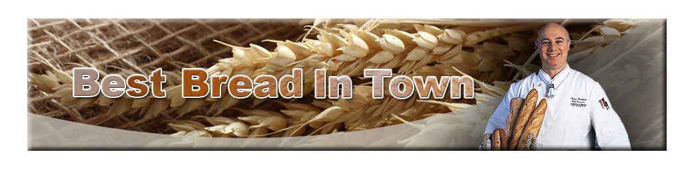

Menu

Welcome to Breads of Josef in Mount Eden Village. Our Award winning bakery is in full view of the cafe, so while you dine with us, you can experience how Josef, Nigel and Thomas make their European style breads from scratch.
Breads of Josef is a German trained baker, pastry chef and chef, with over twenty years of baking experience in a wide range of establishments, from fine dining to first class catering, in Germany and New Zealand.
Josef real passion is for artisan bread. We make a range of traditional European breads from French Pain au Levain to German Vollkorn using only traditional techniques and natural ingredients. Long fermentation and skilful handling at every stage is the way we produce loaves with authentic European flavour, texture and crust. We do not use any flavourings, additives, preservatives or bread improvers.
The result is a unique range of breads, which won 7 Awards at the New Zealand Bakery of the Year Award in 2012. Josef breads are the equal of any you will find in the true artisan bakeries of Europe.
You can watch Josef and his bakers work, just the other side of the glass wall, but if you want to ask any questions or take a closer look feel free to, they love talking about their bread and are happy to give you pointers if you are a keen baker yourself.